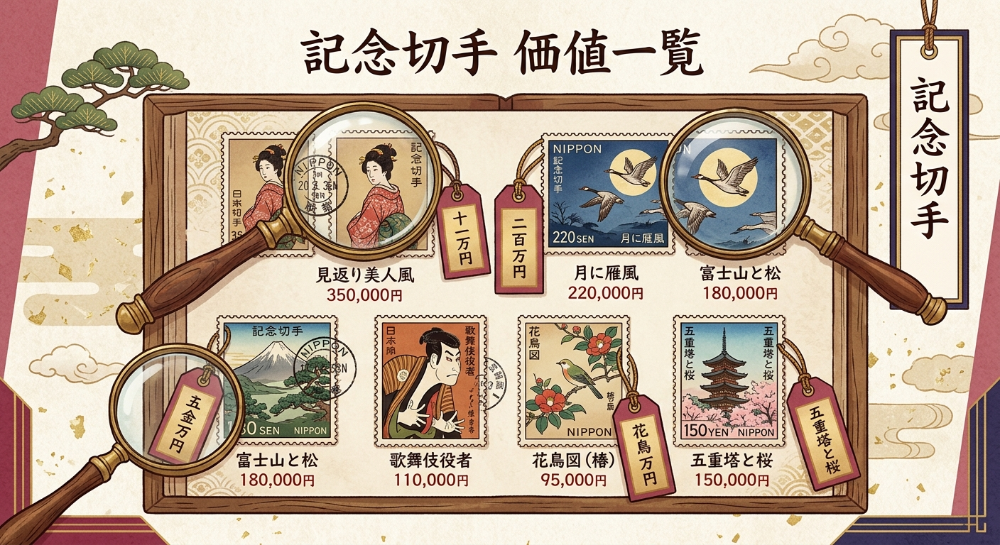
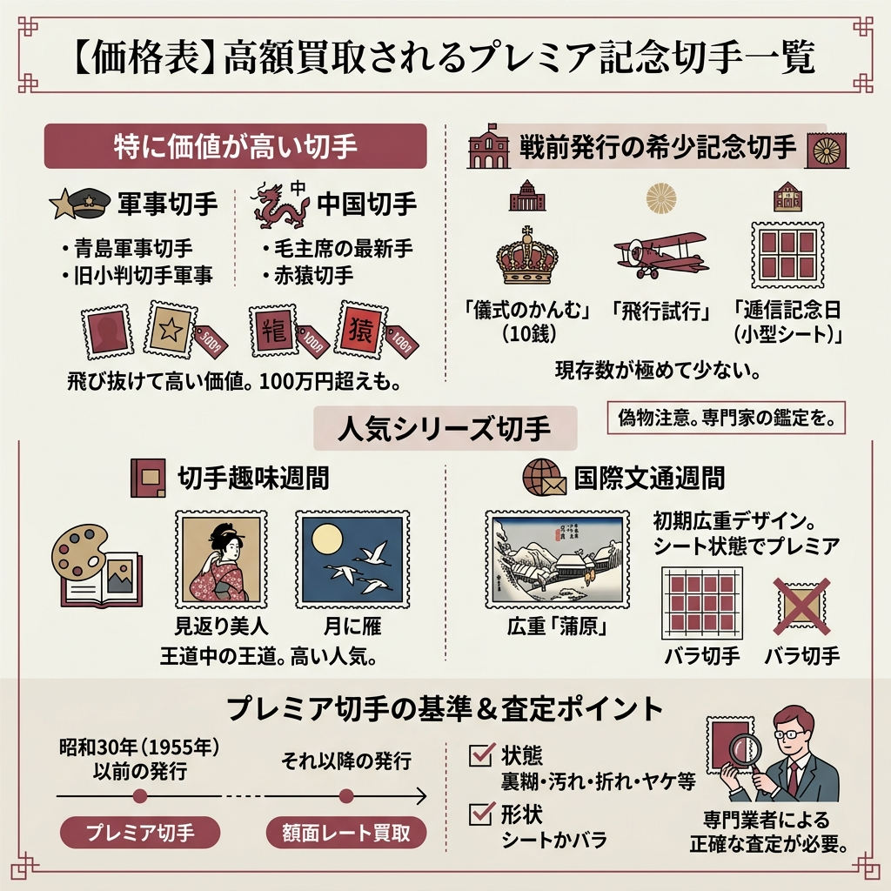
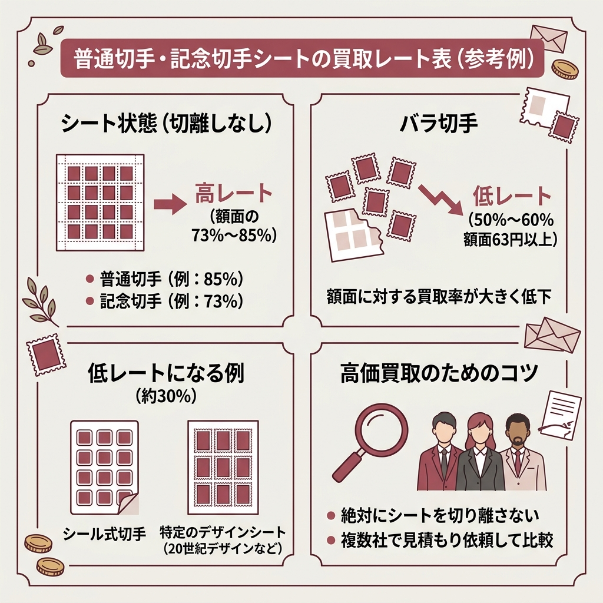
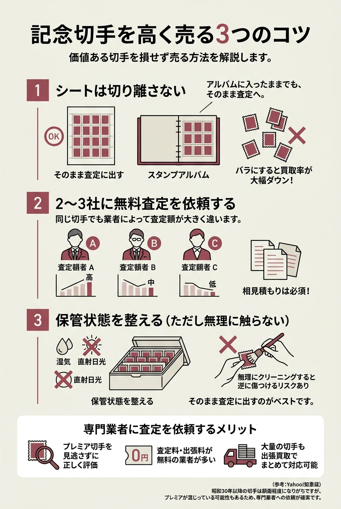
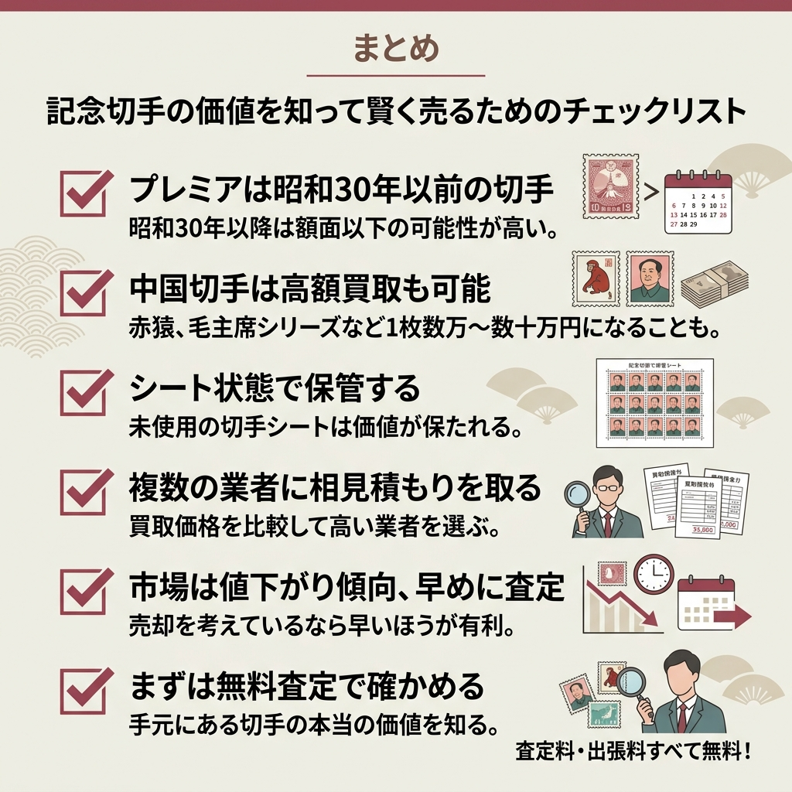

「実家の押し入れから記念切手が大量に出てきたけど、これって価値あるの？」
結論から言うと、記念切手の価値はピンキリです。
昭和30年以降に発行されたものは額面程度にしかならないケースがほとんど。
でも、戦前の希少な記念切手や中国切手の中には、1枚で数万〜数十万円の値がつくものも存在します。
古い切手を大量に譲り受けたんですが、価値が分かりません。価値ある切手の一覧を見れるサイトってありますか？
（Yahoo!知恵袋より）よくある悩みですよね。この記事では、高額買取が期待できる記念切手を種類別・価格帯別に一覧にしています。まずはお手元の切手と照らし合わせてみてください。
この記事では、記念切手の種類別の価値・買取相場を一覧表でまとめました。
「自分の切手に価値があるかどうか」を判断するための参考にしてください。

記念切手は、国家的な行事や特定の人物・団体の業績を記念して発行される特別な切手です。
普通切手と違って発行枚数や発行期間が限定されているのが大きな特徴ですね。
代表的なものに「切手趣味週間シリーズ」の見返り美人・月に雁、「国際文通週間シリーズ」の蒲原などがあります。
普通切手は郵便料金の支払いのために常時発行される切手。記念切手は特定のイベントを記念して期間限定で発行されるため、発行枚数が少ないものほど希少価値が高くなります。
ただし「記念切手＝高い」というわけではありません。
昭和30年代以降の切手収集ブーム時に大量発行されたものは、現存数が多いため額面程度の価値しかないことがほとんどです。
プレミアがつくのは、基本的に昭和30年より前に発行された記念切手だと覚えておいてください。

ここからが本題です。
スクレイピングデータに基づく、高額買取が期待できるプレミア記念切手の価格表を掲載します。
下記の買取相場は参考価格です。実際の買取価格は切手の状態（裏糊の有無・汚れ・折れ・ヤケ等）やシート/バラの状態、市場動向により大きく変動します。正確な査定は専門業者に依頼してください。
| 切手の名称 | 買取相場（参考） |
|---|---|
| 青島軍事切手 | 〜1,530,000円 |
| 毛主席の最新指示切手 | 〜255,000円 |
| 鳥切手 | 〜85,000円 |
| 竜文切手 | 〜85,000円 |
| 赤猿切手 | 〜85,000円 |
| 旧小判切手 | 〜68,000円 |
| 菊切手 | 〜63,580円 |
| 旧大正毛紙軍 | 〜46,750円 |
| 新大正毛紙軍事 | 〜34,000円 |
| 新小判切手 | 〜17,000円 |
| 月に雁（シート） | 〜8,500円 |
| 軍事加刷 | 〜4,250円 |
上の表を見ると分かりますが、軍事切手と中国切手が飛び抜けて高いんですよね。
「記念切手」というカテゴリの中では、戦前の発行で現存数が極めて少ないものがプレミア価格になっています。
特に価値が高いのは、大正〜昭和初期に発行された記念切手です。
「儀式のかんむり」（1916年発行）は、のちの昭和天皇が立太子の礼を受けたことを記念した切手。
10銭の額面は発行枚数が極めて少なく、希少性が高くなっています。
「飛行試行」（1919年発行）は国内初の飛行便試験飛行を記念したもので、「飛行試験切手」とも呼ばれます。
ただし偽物が多く出回っているので、必ず専門家に鑑定してもらってくださいね。
「逓信記念日（小型シート）」（1934年発行）は日本初の4種1組の小型切手シート。
販売場所が限定的だったことから非常に高い価値を持つプレミア切手として知られています。
昭和天皇の御婚儀記念切手は、1923年11月発行予定でしたが、同年の関東大震災でほとんどが消失。南洋諸島（パラオ）に震災前に発送されていたものだけが現存しており、大変希少な切手です。
切手コレクターの間で「王道中の王道」として人気なのがこのシリーズです。
切手趣味週間は、切手収集の趣味を普及するために昭和22年（1947年）に当時の逓信省が設定したものです。
「見返り美人」はその第二弾、「月に雁」は第三弾として発行されました。
ちょうど切手収集ブーム全盛期だったこともあり、今なお人気が高い切手ですね。
月に雁はバラで〜500円、シート状態なら〜8,500円の相場です。
毎年10月6〜12日の国際文通週間にちなんで発行される切手シリーズです。
初期の頃は歌川広重の東海道五十三次がデザインされていて、中でも1960年発行の「蒲原」はコレクター需要が非常に高い1枚。
1958〜1959年発行の「京師」「桑名」より発行枚数が少なかったのがその理由みたいです。
ただしバラ切手にはプレミアがつかないので、シート状態であることが条件になります。
プレミア切手と呼ばれるものは昭和30年より前に発行された切手を指します。それ以降に発行された切手に関しては、額面のレート（％）計算でのお買取りとなります。
新橋スタンプ商会 公式サイトより
記念切手のカテゴリとは少し異なりますが、価値一覧を調べているなら中国切手も知っておいてほしいです。
実は切手市場で最も高額になりやすいのは中国切手なんですよね。
| 中国切手の名称 | 買取相場（参考） |
|---|---|
| 青島軍事切手 | 〜1,530,000円 |
| 毛主席の最新指示切手 | 〜255,000円 |
| 赤猿切手（子ザル） | 〜85,000円 |
1980年発行の「赤猿（子ザル）」は中国初の年賀切手として有名です。
文化大革命時代（1966〜1976年頃）は切手の収集や輸出が制限されていたため、現存数がとても少ないんですよね。
それが希少価値につながっていて、1枚で数万〜数十万円になることもあります。
記念切手の現在の価格が知りたいんです。年賀切手（昭和24年頃から毎年）や万博、美智子さんの結婚記念切手などがあるんですが…。
（Yahoo!知恵袋より）昭和24年頃からの年賀切手は残念ながら大量発行されているものが多く、額面程度になりがちです。ただし、中に中国切手やエラー切手が混じっていれば話は別。まとめて専門業者に査定してもらうのが確実ですよ。
「毛主席シリーズ」「牡丹シリーズ」「オオパンダ」なども高値で取引されています。
ご両親や祖父母が中国と交流があった場合、思いがけない場所から見つかることもありますよ。

プレミアがつかない切手（昭和30年以降発行の記念切手・普通切手）は、額面に対する「レート（%）」で買取されます。
有馬堂の公式サイトで公開されている買取率を参考にまとめました。
| 切手の種類 | 買取率の目安 |
|---|---|
| 普通切手 1,000円 20面シート | 85% |
| 普通切手 500円 100面シート | 85% |
| 普通切手 300〜110円 100面シート | 83% |
| 普通切手 85円 100面シート | 82% |
| 記念切手 84〜110円 10面/20面シート | 73% |
| 普通切手 63円 100面シート | 71% |
| 記念切手 63円以下 シート | 71% |
| バラ切手（額面63円以上） | 50〜60% |
シート状態なら額面の73〜85%で買い取ってもらえますが、バラになると50〜60%まで下がります。シートのまま持っている切手は、絶対に切り離さないでください。
シール式の切手や20世紀デザイン切手シートは額面の30%とかなり低いレートになるそうです。
買取率は業者によって異なるので、複数社に見積もりを取るのが鉄則ですね。
上の価格表で高額になっている切手には、共通する特徴があります。
バラよりシートのほうが高く評価されます。
特に周囲の余白（耳紙）も綺麗に残っているシートはコレクター需要が高いです。
切り離してしまうとプレミアがつかなくなるケースもあるので要注意。
図案が逆さまに印刷された「逆刷り」や、色の一部が抜けている「色抜け」など。
市場に出回る数が極端に少ないため、非常に高い希少価値がつきます。
使用済みでも、記念消印や初日カバー（FDC）など特殊な消印がついている場合は価値があります。
「使用済み＝価値なし」とは限らないんですよね。
先ほどの表の通り、中国切手は飛び抜けて高額になるジャンルです。
文化大革命期の発行で現存数が少ないことが最大の理由。
バイセルなどの専門業者は中国切手の買取を強化しているとのことです。

せっかく価値のある切手を持っていても、売り方を間違えると損をします。
バラにすると買取率が大幅に下がります。アルバムに入ったままでも、そのまま査定に出してください。
同じ切手でも業者によって査定額が大きく違います。相見積もりは必須です。
湿気・直射日光を避けて保管。ただし無理にクリーニングすると逆に傷つけるリスクがあるので、そのまま査定に出すのがベストです。
祖母が集めていた昭和30年以降の記念切手が大量にあるんですけど、高く換金するにはどうすればいいですか？
（Yahoo!知恵袋より）昭和30年以降の記念切手は正直なところ額面程度になりがちです。ただ、中にプレミア切手が混じっている可能性もあるので、まとめて専門業者に査定してもらうのが一番確実ですよ。金券ショップだとプレミアを見逃される恐れがあります。
「昔は高かったのに…」という話をよく聞きますよね。
記念切手の市場価値が下がっている背景には、いくつかの構造的な理由があります。
つまり「売りたい人が増えて、買いたい人が減っている」状態です。
この傾向は今後も続くと見られているので、売却を考えているなら早めに動いたほうがいいというのが正直なところですね。
プレミア切手とはいうものの、年々価値は下がりつつあるのが現状です。お持ちの方はお早めに売却されることをおすすめします（新橋スタンプ商会の公式サイトより）。
記念切手の価値は専門知識がないと正しく判断できません。
それを悪用して、プレミア切手を額面の数十%で買い叩こうとする業者もいるんですよね。
特に出張買取の場合は、家族や知人に同席してもらうことを強くおすすめします。
「とりあえず手元の切手に価値があるか知りたい」という方は、無料査定に対応している業者に相談するのが手っ取り早いです。
どちらも査定料は無料なので、まず2社に査定を依頼して金額を比較するのがおすすめです。

手元の切手に思わぬ価値が眠っているかもしれません。
まずは無料査定で確かめてみてください。